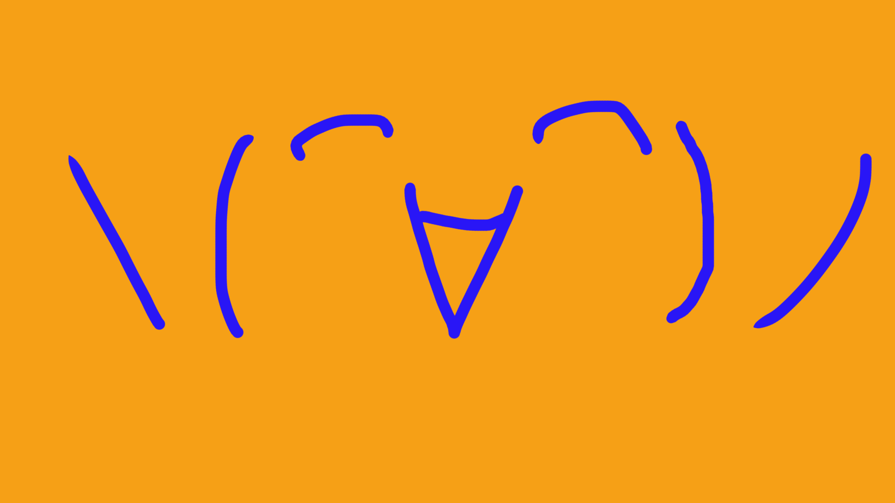

概要
我ら、＼(⌒∀⌒)ノ SAKANA-TO-TORA (サカナトトラ) は、日本のゲーム制作集団。
2021年に結成。
2022年1月に1作目のゲームを公開。
2024/1/8より
https://main.sknttr2022.repl.co/
から
https://sakana-to-tora.github.io/about.html
へサイト移転
戻る

SAKANA-TO-TORA